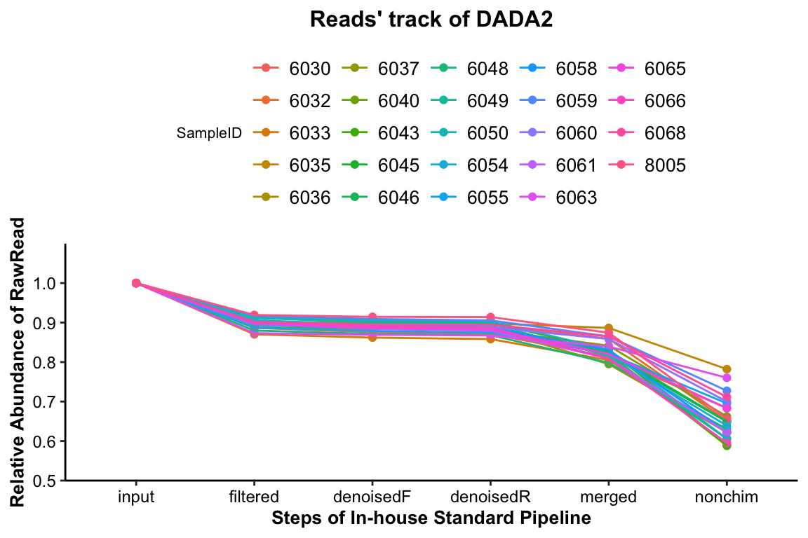

Chapter 3 Quality Control
Loading packages
library(XMAS)
library(dplyr)
library(tibble)
library(phyloseq)
library(ggplot2)
library(ggpubr)Quality control of DADA2 results will help us have more rational determinations on the further data analysis.
3.1 Reads’ track by DADA2
plot_Dada2Track(
data=dada2_res$reads_track,
mode="PE",
relative_abundance=TRUE,
legend_position="top")

Figure 3.1: Reads’ track by DADA2 (16s example)
The percentage of the final remained read counts approximate 70%, indicating that we should consider the sequence depth for analysis when we build the sequence library.
3.2 Spike-in sample (BRS) assessment
# extracting the genus level phyloseq
dada2_ps_genus <- summarize_taxa(ps = dada2_ps, taxa_level = "Genus")
sample_data(dada2_ps_genus)
## Group
## S6030 BB
## S6032 BB
## S6033 BB
## S6035 AA
## S6036 BB
## S6037 AA
## S6040 BB
## S6043 AA
## S6045 BB
## S6046 BB
## S6048 BB
## S6049 AA
## S6050 BB
## S6054 BB
## S6055 BB
## S6058 BB
## S6059 AA
## S6060 AA
## S6061 AA
## S6063 BB
## S6065 AA
## S6066 AA
## S6068 BB
## S8005 QC
RefCheck_16s <- run_RefCheck(
ps=dada2_ps_genus,
BRS_ID="S8005",
Reference=NULL,
Ref_type="16s",
Save=NULL)
## Noting: the Reference Matrix is for 16s
## S8005 is in the Reference Matrix's samples and remove it to run
##
## #########Matched baterica of the Spike-in sample###########
## Checking out all the taxa of the Reference Matrix are in the sequencing dataset
## g__Bifidobacterium
## g__Bacteroides
## g__Faecalibacterium
## g__Lactobacillus
## g__Parabacteroides
## g__Collinsella
## g__Coprococcus_3
## g__Dorea
## g__Streptococcus
## g__Roseburia
## g__Anaerostipes
## g__Escherichia/Shigella
## g__Enterococcus
## g__Prevotella_9
## g__Eggerthella
##
## The number of the additional Taxa in the sequencing dataset is 1
## ###########################################################
##
## ##############Value of the Reference sample###############
## Correlation Coefficient of the Reference sample is: 0.9714
## Bray Curtis of the Reference sample is: 0.07607
## Impurity of the Reference sample is: 0.06409
## ###########################################################
## #####Final Evaluation Results of the Spike-in sample#######
## The spike-in sample of sequencing dataset passed the cutoff of the Reference Matrix
## Cutoff of Coefficient is 0.8946
## Cutoff of BrayCurtis is 0.3878
## Cutoff of Impurity is 0.1565
## ###########################################################3.3 Spike-in sample’s remove
dada2_ps_NoQC <- get_GroupPhyloseq(
ps = dada2_ps,
group = "Group",
group_names = "QC",
discard = TRUE
)
dada2_ps_NoQC## phyloseq-class experiment-level object
## otu_table() OTU Table: [ 896 taxa and 23 samples ]
## sample_data() Sample Data: [ 23 samples by 1 sample variables ]
## tax_table() Taxonomy Table: [ 896 taxa by 7 taxonomic ranks ]
## phy_tree() Phylogenetic Tree: [ 896 tips and 893 internal nodes ]
## refseq() DNAStringSet: [ 896 reference sequences ]3.4 Rarefaction curves
plot_RarefCure(ps = dada2_ps_NoQC,
taxa_level = "OTU",
step = 100,
label = "Group",
color = "Group",
parallel = TRUE,
se = TRUE)
Figure 3.2: Rarefaction curves (16s example)
The result showed that all the samples had different sequence depth but had the full sample richness.
3.5 Systematic Information
sessionInfo()## R version 4.1.2 (2021-11-01)
## Platform: x86_64-apple-darwin17.0 (64-bit)
## Running under: macOS Monterey 12.2.1
##
## Matrix products: default
## LAPACK: /Library/Frameworks/R.framework/Versions/4.1/Resources/lib/libRlapack.dylib
##
## locale:
## [1] en_US.UTF-8/en_US.UTF-8/en_US.UTF-8/C/en_US.UTF-8/en_US.UTF-8
##
## attached base packages:
## [1] stats graphics grDevices utils datasets methods base
##
## other attached packages:
## [1] ggpubr_0.4.0 ggplot2_3.3.5 phyloseq_1.38.0 tibble_3.1.6 dplyr_1.0.8 XMAS_2.1.0
##
## loaded via a namespace (and not attached):
## [1] utf8_1.2.2 tidyselect_1.1.2 RSQLite_2.2.10 AnnotationDbi_1.56.2
## [5] htmlwidgets_1.5.4 grid_4.1.2 BiocParallel_1.28.3 munsell_0.5.0
## [9] codetools_0.2-18 DT_0.21 withr_2.5.0 colorspace_2.0-3
## [13] Biobase_2.54.0 highr_0.9 knitr_1.37 rstudioapi_0.13
## [17] stats4_4.1.2 robustbase_0.93-9 ggsignif_0.6.3 MatrixGenerics_1.6.0
## [21] labeling_0.4.2 optparse_1.7.1 GenomeInfoDbData_1.2.7 lpsymphony_1.22.0
## [25] bit64_4.0.5 farver_2.1.0 rhdf5_2.38.1 vctrs_0.3.8
## [29] generics_0.1.2 TH.data_1.1-0 xfun_0.30 Maaslin2_1.8.0
## [33] R6_2.5.1 GenomeInfoDb_1.30.1 locfit_1.5-9.5 RcppZiggurat_0.1.6
## [37] bitops_1.0-7 rhdf5filters_1.6.0 cachem_1.0.6 DelayedArray_0.20.0
## [41] assertthat_0.2.1 scales_1.1.1 multcomp_1.4-18 nnet_7.3-17
## [45] gtable_0.3.0 sandwich_3.0-1 rlang_1.0.2 genefilter_1.76.0
## [49] splines_4.1.2 protoclust_1.6.3 rstatix_0.7.0 broom_0.7.12
## [53] checkmate_2.0.0 yaml_2.3.5 reshape2_1.4.4 abind_1.4-5
## [57] backports_1.4.1 Rfast_2.0.6 qvalue_2.26.0 Hmisc_4.6-0
## [61] DiagrammeR_1.0.9 tools_4.1.2 bookdown_0.24 zCompositions_1.4.0
## [65] ellipsis_0.3.2 gplots_3.1.1 jquerylib_0.1.4 biomformat_1.22.0
## [69] RColorBrewer_1.1-2 BiocGenerics_0.40.0 Rcpp_1.0.8.2 plyr_1.8.6
## [73] base64enc_0.1-3 visNetwork_2.1.0 zlibbioc_1.40.0 purrr_0.3.4
## [77] RCurl_1.98-1.6 rpart_4.1.16 Wrench_1.12.0 cowplot_1.1.1
## [81] S4Vectors_0.32.3 zoo_1.8-9 SummarizedExperiment_1.24.0 ggrepel_0.9.1
## [85] cluster_2.1.2 magrittr_2.0.2 data.table_1.14.2 truncnorm_1.0-8
## [89] mvtnorm_1.1-3 matrixStats_0.61.0 ALDEx2_1.26.0 corncob_0.2.0
## [93] RAIDA_1.0 evaluate_0.15 xtable_1.8-4 XML_3.99-0.9
## [97] jpeg_0.1-9 IRanges_2.28.0 gridExtra_2.3 shape_1.4.6
## [101] compiler_4.1.2 KernSmooth_2.23-20 crayon_1.5.0 htmltools_0.5.2
## [105] mgcv_1.8-39 pcaPP_1.9-74 Formula_1.2-4 tidyr_1.2.0
## [109] geneplotter_1.72.0 libcoin_1.0-9 DBI_1.1.2 biglm_0.9-2.1
## [113] MASS_7.3-55 Matrix_1.4-0 ade4_1.7-18 getopt_1.20.3
## [117] car_3.0-12 permute_0.9-7 cli_3.2.0 parallel_4.1.2
## [121] igraph_1.2.11 GenomicRanges_1.46.1 pkgconfig_2.0.3 coin_1.4-2
## [125] foreign_0.8-82 foreach_1.5.2 annotate_1.72.0 bslib_0.3.1
## [129] multtest_2.50.0 XVector_0.34.0 NADA_1.6-1.1 stringr_1.4.0
## [133] digest_0.6.29 vegan_2.5-7 Biostrings_2.62.0 rmarkdown_2.13
## [137] htmlTable_2.4.0 edgeR_3.36.0 gtools_3.9.2 modeltools_0.2-23
## [141] lifecycle_1.0.1 nlme_3.1-155 jsonlite_1.8.0 Rhdf5lib_1.16.0
## [145] carData_3.0-5 limma_3.50.1 fansi_1.0.2 pillar_1.7.0
## [149] lattice_0.20-45 KEGGREST_1.34.0 fastmap_1.1.0 httr_1.4.2
## [153] DEoptimR_1.0-10 survival_3.3-1 glue_1.6.2 png_0.1-7
## [157] iterators_1.0.14 glmnet_4.1-3 bit_4.0.4 stringi_1.7.6
## [161] sass_0.4.0 metagenomeSeq_1.36.0 blob_1.2.2 DESeq2_1.34.0
## [165] latticeExtra_0.6-29 caTools_1.18.2 memoise_2.0.1 ape_5.6-2